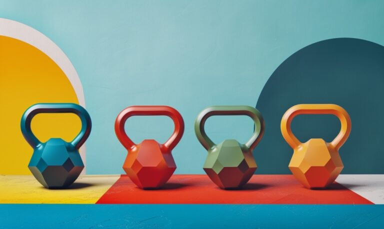

Тренування з гирями:
користь, основні
правила та коментар
тренера

Гирі – чудовий спортивний інструмент, який може допомогти тобі досягти бажаного результату й одночасно опанувати новий вид спорту.
Гирьовий спорт зародився у Східній Європі в 1948 році. Спочатку відомий як “гирьовий спорт”, цей стиль вправ з гирями характеризується повторюваними вибуховими рухами протягом тривалого часу.
На змаганнях спортсмени виконують ривок гирі, поштовх або довгий цикл (комбінація ривка і поштовху) протягом повного 10-хвилинного раунду. Рухи повинні бути плавними і тривають протягом усього відведеного часу. Крім того, мета полягає в тому, щоб зберегти силу і створити ефективність у рухах.
На змаганнях використовують спеціальні гирі одного розміру, але вони всі різної ваги.
У залі, якщо тренування з гирями – це частина твоєї фітнес-рутини, можуть використовуватись гирі різних розмірів, які виготовлені з різних матеріалів.
Так, їх можна використовувати замість гантелей як додаткову вагу. Але найбільшу користь від тренування ти отримаєш, якщо будеш виконувати спеціальні вправи, розроблені спеціально для роботи з гирями!
Переваги тренувань з гирями
- Тренування на все тіло.Однією з головних переваг тренувань з гирями є їхня здатність забезпечити комплексне тренування всього тіла. Конструкція та функціональність гирь дозволяє виконувати динамічні рухи, які задіюють кілька груп м’язів одночасно. Чи то махи, жими, ривки або турецькі підйоми – ці комплексні вправи розвивають силу, витривалість і гнучкість всього тіла.
- Допомагають швидше схуднути. Високоінтенсивні рухи всім тілом під час тренувань з гирями збільшують витрату калорій і прискорюють метаболізм, сприяючи втраті жиру. Крім того, м’язове навантаження від вправ з гирями допомагає зберегти суху м’язову масу, яка якраз і пришвидшує схуднення (мʼязи споживають велику кількість енергії навіть у спокої).
- Покращують здоровʼя серцево-судинної системи.Tренування з гирями ефективні не лише для розвитку сили, але й для покращення серцево-судинної системи. Багато вправ з гирями передбачають безперервні ритмічні рухи, які підвищують частоту серцевих скорочень. Таке поєднання силових і кардіотренувань в одному тренуванні допомагає підвищити витривалість і загальне здоров’я серцево-судинної системи.
- Розвивають вибухову та функціональну силу.Тренування з гирями відомі своєю здатністю розвивати функціональну силу та вибухову силу. Балістична природа багатьох вправ з гирями, зокрема махів та ривків, вимагає генерації сили стегнами, ногами та корпусом.
- Покращує функціональність тіла.Тренування з гирями ґрунтуються на функціональних рухах, які імітують реальну діяльність. Виконуючи складні багатосуглобові вправи, які залучають до спільної роботи кілька суглобів і груп м’язів, ти покращуєш свою здатність ефективно і безпечно рухатися у повсякденному житті. І зменшуєш ризик отримати травми.
- Підвищують силу кору та стабільність.Під час виконання всіх вправ з гирями посилено працюють м’язи кору, оскільки вони діють як стабілізатори під час динамічних рухів. Махи, турецькі підйоми та обертальні вправи підключають м’язи живота, спини та стегон, що призводить до покращення сили м’язів преса, утримання балансу та контролю постави. Не забувай, що сильний прес – це не просто похизуватись шістьма кубиками! Мʼязи преса допомагають тобі підтримувати правильну поставу та запобігають появі болю в попереку.
Загалом можна сказати, що, окрім отримання специфічних переваг від вправ з гирями, додавання таких тренувань у твій розклад зробить його різноманітнішим та однозначно веселішим. Бо тобі доведеться опановувати зовсім нові для твого тіла рухи й вчитися володіти новим спортивним обладнанням. І, можливо, в результаті в тебе може стати на одну спортивну мету більше.
18 та 13 липня Андрій Давидов буде проводити майстер-клас з гирьового спорту в APOLLO NEXT 020: 11 липня – 18:00, 13 липня – 12:00. Для того, щоб зареєструватися, тобі потрібно звернутися до Андрія в дірект → Instagram.
Ми попросили його коротко та доступно розказати про те, що таке тренування з гирями, та чим вони можуть бути корисні!